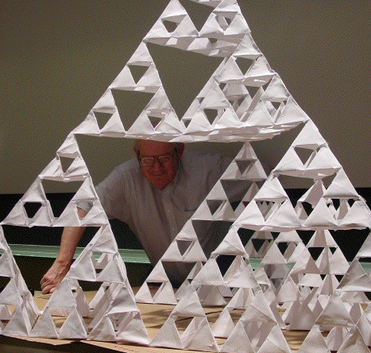

|  |
| Benoit Mandelbrot died Thursday, October 14, 2010, peacefully in his sleep, his beloved
wife Aliette at his side. |
| Benoit was a member of the Yale community for many years, first as the Robinson Adjunct
Professor of Mathematics, then as Sterling Professor of Mathematical Sciences. The recipient of many
awards, Benoit is remembered for recognizing that the self-similar patterns found in some
century-old mathematical constructions are an effective language for understanding much of nature,
from pulmonary systems to the distribution of galaxies. He showed that fractal dimension is
a way to quantify roughness, revitalized the study of complex iteration by introducing breath-taking images
of the Mandelbrot set, modeled the risk of financial markets, developed multifractals to
study turbulence, and much, much more. Less familiar was his involvement in science education, from
elementary school through college. The picture above is Benoit at one of the summer workshops
that he, Nial Neger, and I ran for middle school, high school, and college teachers. I chose this
picture because it shows Benoit's playful side. As seriously as he took his work,
Benoit was never far from a sense of wonder in discovery. This notion, that our work should be a source of joy for us,
he shared with so many others, and is not the least of his legacies. |
|
| Benoit's work involved large ideas spanning many fields, but how he understood the focus
of his work was given in his answer to the question, "What do you consider yourself to be, a
physicist, a mathematician, or an economist?" asked years ago by a visitor he brought to
Yale. Benoit grinned and replied, "I am a storyteller." So I'll share a story about Benoit. |
|
| The first year I visited Yale to work with Benoit, he asked me to do a complicated
calculation involving lacunarity, a measure of the distribution of gaps in a fractal. The work
was intricate and took about a week. My calculations seemed to show the opposite of the result
Benoit expected. Although all of our intereactions had been very friendly, I had heard rumors about
a huge ego and was worried at how he'd react to the result disagreeing with his intuition. Nevertheless, I began sketching
the argument to him. After a very short time, he got the point, grinned broadly, and said,
"Marvelous. The problem is more interesting than I had thought." Benoit was a serious
scientist. His respect for correct, careful argumentation was absolute. Working with him
these last 20 years has been a real joy. |
| If you'd like to share a story about Benoit, please send
it to me at michael.frame@yale.edu. |
|
| Benoit often said that a fractal is understood just as much through what has been removed as
through what remains. That I shall never again answer the phone and hear, "Hello, Michael, this
is Benoit. I was wondering ... ," a preamble to another adventure, has left a hole in my
life. Even as he leaves us, Benoit continues to teach. |
|
| Michael Frame |
|